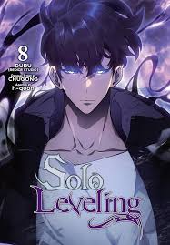
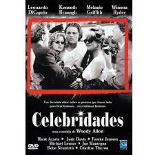

Bem-vindo à Sua Biblioteca!
A leitura é uma porta para o conhecimento e a imaginação. Aqui, você encontrará uma rica seleção de livros, revistas e DVDs que inspiram e informam. Explore nossas coleções e mantenha-se atualizado com as novidades do mundo literário.

Novos Livros
Descubra os lançamentos mais empolgantes do mês!
Últimas Revistas
Mantenha-se atualizado com as revistas mais recentes.

Últimos DVDs
Aproveite a seleção de novos filmes e documentários.